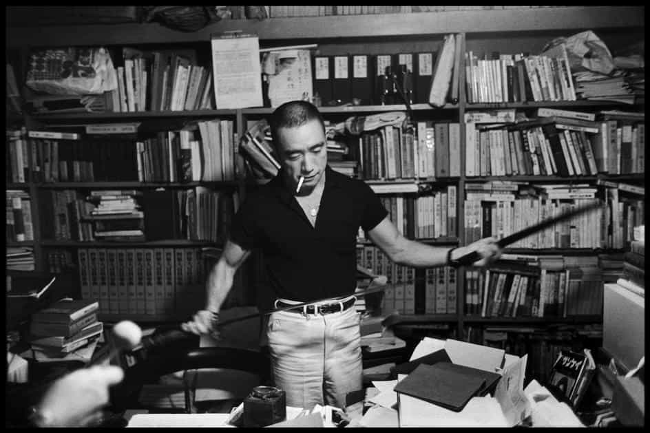
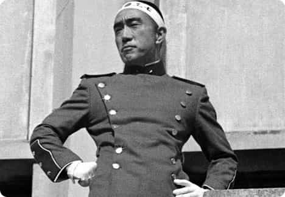
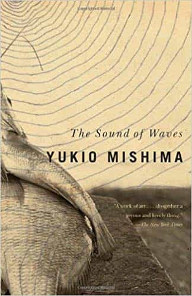
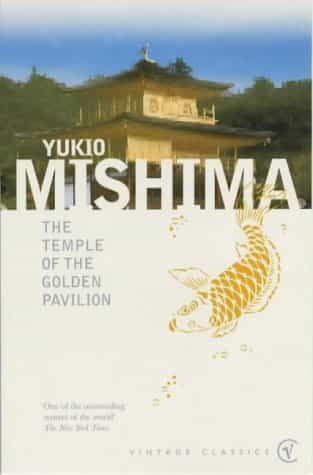
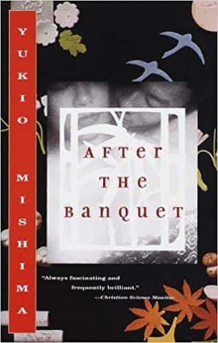
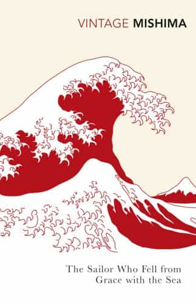
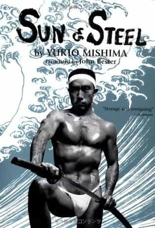

In post-World War II times, very few fiction authors appear interesting and inspiring. Either they have weak narrative and stylistic talent or lack firm ideas to hinge their skill upon (or both).
Yukio Mishima, the pen name of Japanese author Kimitake Hiraoka (1925-1970), is however one such unusual literary persona. As with many other literary cult figures, he was something of a renaissance man or at least a more sophisticated Jack of all Trades, as he wrote various novels, essays and plays, appeared in films, practiced kendo as well as natural bodybuilding, and did some modeling. He was also a political activist and devoted family man.
There are many firm and masculine ideas within his works, combined with a dazzling prose. I would like to describe five of his best works below. The brackets include the release years for the first editions in Japanese and the somewhat later translations into English.


The Sound of Waves (1954, 1981)
The Sound of Waves is a brilliant novel about heterosexual love in a simple maritime environment. Even though it is obviously linked to a particular location and context, a fictive island in Japan, it includes an almost universal depiction of love, before urban modernity penetrated the lives of most common men. Although one does not have much use of this book these days, as it is romantic, it still shows how real love can manifest itself under particular circumstances.
The book includes several beautiful descriptions of the surrounding environments, and shows how magnificent nature can be even today. A man, regardless of age, can be captured by the objective truth of the world’s nature and gain strength from it:
The boy felt a consummate accord between himself and this opulence of nature that surrounded him.
The main character, Shinji, is a poor and simple but physically able boy who possesses real character:
The only thing that really counts in a man is his get-up-and-go. If he’s got get-up-and-go he’s a real man, and those are the kind of men we need here on Uta-jima. Family and money are all secondary.
Although those types of qualities unfortunately are less significant these days, one could still emphasize them as good ideals in a better future.

The Temple of the Golden Pavilion (1956, 1959)
A less cheerful yet enthralling and likewise extremely well-written story is The Temple of the Golden Pavilion. Those who have been to Kyoto might have visited the golden pavilion, Kinkaku-ji, and been rapt by its majestic and profound beauty.
This building was burned down in 1950 (and rebuilt in 1955), and around that fact Mishima has elaborated a story about the mind of a young deranged male person who lets his shortcomings and almost mysterious misanthropy guide him.
Theme-wise it does partly resemble another book by Mishima, The sailor Who Fell From Grace With The Sea, and Swedish Nobel prize in literature laureate Pär Lagerkvist’s book The Dwarf (1944), but unlike Lagerkvist’s dwarf the stuttering protagonist does not represent pure evil as his personality appears more complex and caleidoscopic. If one is interested in Zen Buddhism, this book is highly recommended but can be read regardless of one’s religious inclinations.
Amid the moon and the stars, amid the clouds of the night, amid the hills which bordered on the sky with their magnificent silhouette of pointed cedars, amid the speckled patches of the moon, amid the temple buildings that emerged sparkling white out of the surrounding darkness – amid all this, I was intoxicated by the pellucid beauty of Uiko’s treachery.

After the banquet (1960, 1963)
Personally, I am not particularly fond of purely political novels. However, in After The Banquet Mishima has found a delicate balance between ideas, social realism, culture and sex relations.
The story centers around a woman, Kazu, who gives up her entrepreneurial career in order to focus on the marriage with an aristocratic retired politician. The story portraits a truly strong and good yet far from flawless woman, in the interval between tradition and modernity, and how she realizes that she must make personal sacrifices in order to serve her husband.
Apart from the middle-aged Kazu, it portrays a truly masculine man who lacks any sign of degenerate dandyism so common among those in power:
Only Yuken Noguchi seemed different and stood out from the others. His manly face had a straightforward ruggedness it would never lose, and, unlike the others, his attire was utterly devoid of affection or dandyism. Thick, strikingly long eyebrows jutted above his sharp, clear eyes. His features taken individually were impressive, but they warred with another, and his lean build accentuated the disharmony.

The Sailor Who Fell From Grace With The Sea (1963, 1965)
The Sailor Who Fell From Grace With The Sea is one of Mishima’s true masterpieces, as it constitutes a plot which mixes traditional masculine ideals with thrilling narration.
A group of 13-year-old boys, of which one is the protagonist Noburu, are fascinated by a sailor who wishes to settle down with Noburu’s mother after spending manifold rough days and nights on the sea. However, when they realize that the world of adults if full of whims, petty romanticism and hypocrisy they conspire against the fallen role model.
Their fanatic worldview gives a hint of Mishima’s own traditional elitism. One of the most intriguing passages is when Noburu kills a kitten as a rites of passage:
Noburu had withstood the ordeal from beginning to end. Now his half-dazed brain envisioned the warmth of the scattered viscera and the pools of blood in the gutted belly finding wholeness and perfection in the rapture of the dead kitten’s large languid soul. The liver, limp beside the corpse, became a soft peninsula, the squashed heart a little sun, the reeled-out bowels a white atoll, and the blood in the belly the tepid waters of a tropical sea. Death had transfigured the kitten into a perfect, autonomous world.
Albeit it is a bit extreme and far-fetched there are some red pills in there, as many boys are disappointed by weak males who fail to hold on to ideals which they earlier in life held so dear.
If one is interested in maritime settings and wishes for something more philosophical than let’s say Ernest Hemingway’s The Old Man And The Sea, I would highly recommend August Strindberg’s On The Seaboard (1890, 1913), as it is a perfect complement to Mishima’s work.

Sun and Steel (1968, 1970)
Natural bodybuilding was a serious interest for Mishima, and as I have stressed in several articles it is for me too. Therefore it is a blessing to read about this phenomenon from a philosophical perspective. Mishima was not big but he lifted consistently and wrote about it with great enthusiasm in the essay Sun and Steel.
Here is a great quote:
The nature of the steel is odd. I found that as I increased the weight little by little, it was like a pair of scales: the bulk of muscles placed, as it were, on the other pan increased proportionately, as though the steel had a duty to remain a strict balance between the two. Little by little, moreover, the properties of my muscles came increasingly to resemble those of the steel. The slow development, I found, was remarkably similar to the process of education, which remodels the brains intellectually by feeding it with progressively more difficult matter. And since there was always the vision of a classical ideal of the body to serve as a model and an ultimate goal, the process closely resembled the classical ideal of education.


Conclusion
Yukio Mishima is indeed one of the most fascinating authors in post-war times, and has managed to create a synthesis between traditional and some of the best modern Japanese and Western ideas. Stylistically his prose is often extraordinary and finds itself a position between laconic realism adorned with dazzling metaphorical language. ROK readers are thus advised to neglect the keyboard or smartphone for a moment and take part of some of his literary work.
Read More: The Important Works Of French Author Michel Houellebecq